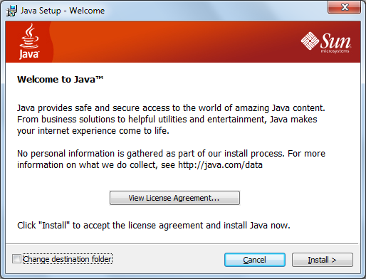
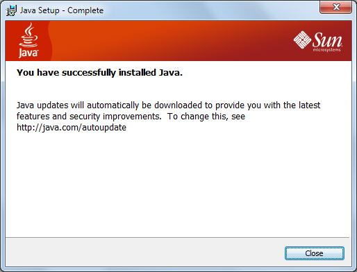
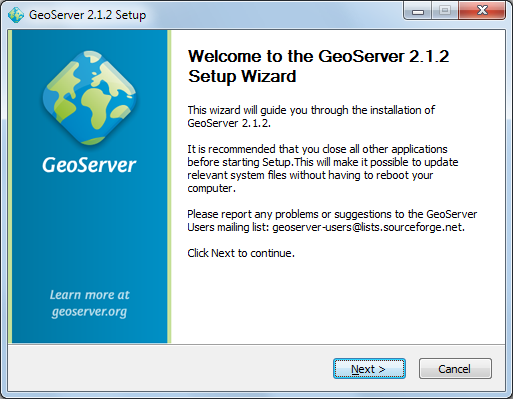
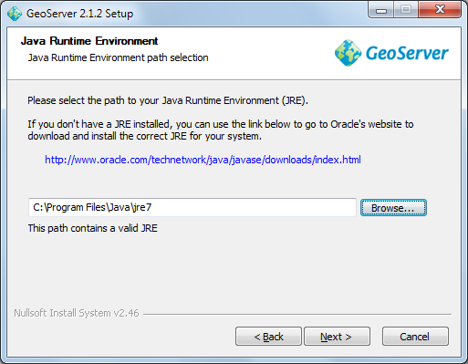
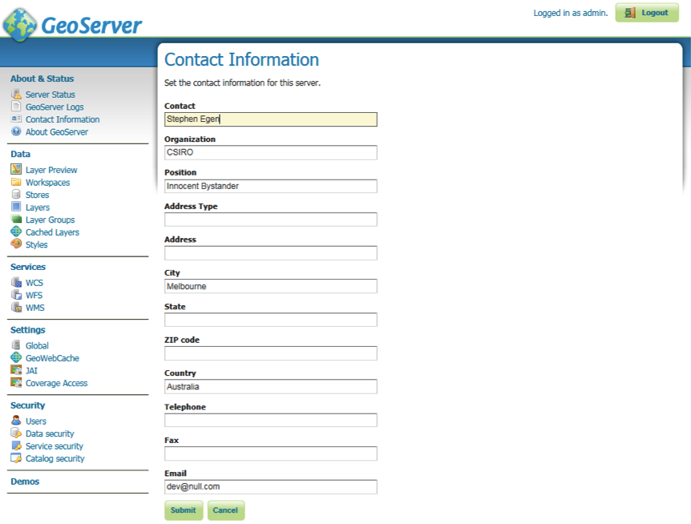

GeoServer Install¶


Introduction¶
GeoServer is Java Enterprise Edition application used to publish spatial information. It supports a number of Industry Standard protocols and also offers a REST API for configuration.
In this workbook we are going to install GeoServer and go over a couple of configuration options.
After completing this workbook, you will have:
- Installed a Java Runtime Environment onto your computer
- Installed GeoServer using the Windows installer
- Started up and Customize GeoServer
- Started the Open Layers Tasmania Preview
Java Runtime Environment¶
GeoServer is a Java application – if you do not already have Java on your system please go ahead and install it now. Any version of Java 5 or newer will do fine.
- Download the latest Java SE Runtime Environment from oracle:
At the time of writing jre_7u1-windows-i586.exe had just been released.
- Double-click the installer (jre_7u1-windows-i586.exe is used in this example) and accept the license agreement.

- Press the Install but to get going.

- Congratulations Java is now installed.

GeoServer Install¶
GeoServer can be installed as a windows service or as an application. We will be testing our GeoServer as a normal application.
- Downloaded the latest GeoServer release:
As this workbook went to press we got a hold of geoserver-2.1.2.exe
- Double-click the geoserver installer to start.

- GeoServer is released under the GPL license, press I Agree to continue.
Note
GeoServer uses the same LGPL GeoTools and ImageIO-Ext projects as uDig.

- GeoServer will install into the Programmers Files directory, press Next to continue.

- Press Next to create the default start menu folder

- GeoServer select your current Java Runtime Environment. Press Next to continue.

- GeoServer will store your configuration in a “data directory”, the default location will work fine. Press Next to continue.

- GeoServer provides a web based configuration system allowing you to administer the application remotely. Please accept the default credentials (admin and geoserver) for the purpose of this tutorial.

- You can also choose the port for the service, 8080 will be fine for this tutorial.
Note
The GeoServer installer uses the Jetty application container. GeoServer is also available as a war if you would like to use Tomcat.

- We now get to choose “Run Manually” (as we are just interested in evaluating GeoServer at this time).

- You can review your settings and then press Finish to install GeoServer.

- Please wait while GeoServer installs.

- Thank you for installing GeoServer!

OpenLayers Tasmania Preview¶
GeoServer provides a layer preview implemented with the OpenLayers AJAX library.
- From the Welcome screen select Layer Preview from the list on the left.
- From the Layers Preview page type Tasmania into the search box and press enter.
- In the tasmania row click on the OpenLayers link.

- Click on the highlighted OpenLayers link at the bottom to open a new tab. As this Open Layers application is started up you can watch the GeoServer console respond to queries.

- This will bring up a web application put together with “Open Layers”.
Note
This is the same map used as a reference point for the uDig Walkthrough 2 tutorial.

Starting up GeoServer¶
In this section you will learn how to start GeoServer, and explore its editing abilities.
- Click Start ‣ Programs ‣ GeoServer 2.0.1 ‣ Start GeoServer

- When starting for the first time you will need to grant the Firewall permission for GeoServer to open a port.

- GeoServer will open up a console running the Jetty Application Server; please wait until Jetty indicates it is listening on port 8080 as shown below.
Note
If you already jave a web server running on 8080 you can modify the jetty xml file by hand.

- You can use the start menu to open the “GeoServer Web Admin Page”.
The web browser will open:

- We need to login before we can use the configuration screen. Fill in admin and geoserver along the top of the screen and press Login.
- The welcome screen now has a great many more options than in previous versions.

- You may notice that this GeoServer belongs to “The ancient geographes INC”. Let us go in and fix that up.
- Click on Contact Information and fill in the details for your organisation.

- Press the Submit button, you will be returned to the Welcome screen and you can see the contact organization has been changed.
- In a similar fashion change the title of the WMS to “Local Web Map Server”.

What to do Next¶
If you finish early here are some challenges.
- The “Sample Requests” demo lets you try out requests one at a time by selecting them from a List and hitting Submit.
- Try out a GetFeature request by hand.
- Try out WMS GetCapabilities and confirm the title is as you defined it.
- Turn down the amount of logging to let GeoServer run faster
- Advanced: Have a look at the open layers link for the Tasmania layer preview. Can you explain what trick Geoserver is doing.
Hint
Look at the URL and source code of the Tasmania layer preview.
- How can you use GeoServer in your organisation?